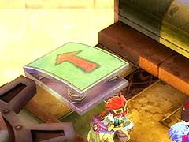

翻弄されて奇襲を食らわないように注意してください。

吸い寄せられてダメージを受けないように注意してください。
倒された後でもダメージ判定がある攻撃を持っているので、注意してください。
A' 地点に着地すると同時に、敵が出現します。


リフトに乗りそびれても、しばらく待ってもう一度すっちを押すと、戻ってきます。

目次 > ゲームについて > 日本Falcom 攻略 > ZWEI II > ダンジョン一覧 > 灼天高炉 (LV.11)
らんの眼
ZWEI II (ツヴァイ 2、ZWEI II Plus)
| 概要 | 情報 | 攻略チャート |
| フード交換 | ペットについて | ボス戦 |
| 敵キャラ一覧 | ハンターランク | G-コロッセオ |
| アイテム一覧 | ガジェット一覧 | トレジャー一覧 |
| ダンジョン一覧 | クリアデータ特典 | Plusの追加要素 |
| ZWEI II攻略へ | 目次へ戻る |
| 第1 階層 |
|
αの印が付いた敵は「いふりーと」です。 翻弄されて奇襲を食らわないように注意してください。 |
|
βの印が付いた敵は「おおぐちぼや」です。 吸い寄せられてダメージを受けないように注意してください。 |
| γの印が付いた敵は「ひのとり」です。 倒された後でもダメージ判定がある攻撃を持っているので、注意してください。 |
|
|  | A 地点のジャンプ台に乗ると、A' 地点へ飛ばされます。 A' 地点に着地すると同時に、敵が出現します。 |
|
B 地点のレバーを動かすと、B' 地点の扉が開きます。 |
|
C 地点のスイッチを押すと、リフトが動きます。 リフトに乗りそびれても、しばらく待ってもう一度すっちを押すと、戻ってきます。 |
|
D 地点の壷を壊すと、中から敵が出てきます。 |
| 第2 階層 |
|
αの印が付いた敵は「いふりーと」です。 翻弄されて奇襲を食らわないように注意してください。 |
 |
A 地点のゴングを扉越しに攻撃することで、A' 地点の扉が開きます。それと同時に、B と書いてあるリフトが動き出します。 |
| B のリフトに取り付けられている2 つの風船を割ることで、B' 地点の扉が開きます。 「アンチトラップ」と「健康祈願のお守り」を装備しないと、ノーダメージで風船を割るのは困難でしょう。  (アンチトラップ) |
|
 |
D 地点の的に攻撃を当てると、D' 地点の扉が開きます。 |
|
E 地点の的に攻撃を当てると、E' 地点の扉が開きます。 |
|
F 地点の的に攻撃を当てると、F' 地点の扉が開きます。 |
 |
G 地点へ移動すると、敵が出現します。 |
| 第3 階層 |
 |
αの印が付いた敵は「ころにー」です。 カサカサと近づかれてダメージを受けないように注意してください。 |
|
βの印が付いた敵は「いふりーと」です。 翻弄されて奇襲を食らわないように注意してください。 |
| γの印が付いた敵は「ひのとり」です。 倒された後でもダメージ判定がある攻撃を持っているので、注意してください。 特にこの階層では狭い場所に突然現れるので、γの印が付いた場所では慎重に行動してください。 |
|
|
A 地点へ移動すると、敵が出現します。 |
| 概要 | 情報 | 攻略チャート |
| フード交換 | ペットについて | ボス戦 |
| 敵キャラ一覧 | ハンターランク | G-コロッセオ |
| アイテム一覧 | ガジェット一覧 | トレジャー一覧 |
| ダンジョン一覧 | クリアデータ特典 | Plusの追加要素 |
| ページの上部へ | ZWEI II 攻略へ | 目次へ戻る |